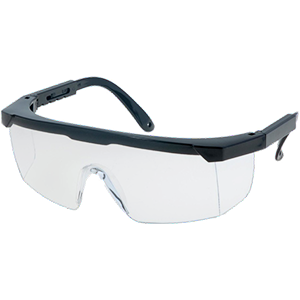

Laws and Regulations
Banned States and Territories
Before even thinking about buying a gel blaster, it is important to know that they may not be legal where you live. All states, beside Queensland, have declared gel blasters as dangerous firearms, and placed under the same categorisation as semi-automatic rifles and paint ball guns (in some states).
Liscencing for Banned States
If you live in one of the aforementioned states where gel blasters are illegal, then there is still hope yet. You can either take part in activites that hope to take back the right for gel blasters, or you can apply for licensing to own one. They require a Class A gun license (in some states), which means you must be over 18 to own and use one anyways.
Click on your state/territory to see how to apply for licensing to own a gel blaster.
- New South Wales
- Victoria
- South Australia
- Australian Capital Territory
- Western Australia
- Northern Territory
- Tasmania
- Queensland
If you have a gun license
If you are lucky enough to have your application for a grade A gun license approved, then there are still certain rules to abide. Before I begin, please note that THIS WEBSITE CANNOT BE USED FOR LEGAL ADVICE - please consult the listed websites above, and ensure you pick the state/territory you live in. Now that you know that this website cannot describe all of the applicable laws, there are a few things that you can expect if you own a gel blaster in the states/territories where it is illegal.
You will likely have to do the following things:
- Keep the gun out of sight and in a locked container/closet
- Never take the weapon out in public where it can be seen
- Never cause public alarm with the use or visibilty of your weapon, even when on private property
- Never use your weapon to commit crimes - legally being able to own a gun doesn't mean you can use one on someone else or in a public area, or at a public area.
- You will also have to follow all applicable laws within your state or territory's police system (SOME are listed above)
Laws within Queensland
If you live in Queensland, you will be expected to follow the laws listed in the previous section, and treat your gel blaster like a real gun. However, this does not mean that you need a gun license to own one - you merely need to treat you imitation weapon with respect and never use it innappropriately. This means you cannot have your gel blaster in clear view in public, and it must be kept in a conatiner that does not silhouette a gun. You must also keep the gun in a locked container when it is not in use. The only time you can use it is at a gel blasting field, or on your own (or someone who has given permission's) property, and the gel blaster must not be in public sight or used in a way to cause distress or panic. The gels must also not go into someone else's property.
Safety
You've probably heard this a million times, but - safety first. Gel blasters are designed to be harmless and completely unable to penetrate human skin. However, there are two weakspots on the human body. Yep, the eyes. These are precious organs that you really don't want to damage. Luckily, they are easy to protect, as all you need are goggles. Almost all (I'm pretty sure it's all but no guarantees) gel blasters come with goggles. This means that you don't need to pay an extra cent for protective equipment. It is ILLEGAL NOT TO WEAR EYE PROTECTION WHILE GEL BLASTING, OR TO POINT/FIRE A GEL BLASTER AT SOMEONE WHO DOES NOT HAVE EYE PROTECTION, EVEN IF THE GUN IS NOT LOADED.
No goggles |
Basic glasses |
Face shield |
Helmet |
|---|---|---|---|
$0 |
$4 |
$119 |
$199 |
|
 |
|||
|
|
|
|
Other than the eyes, there really isn't much you need to worry about when it comes to gel blasting safety. No other protective equipment is needed, and a basic shirt and trousers can go a long way. However, this doesn't mean you are free of pain. The impact of a gel ball is relatively painful, so you need a little mental steeling beforehand. In saying that, however, they are that bad. It is like being flicked over and over. The fps (feet per second) of a blaster and the gels used determines the 'pain level'. If you are worried about a younger participant being harmed, then there are fps limited sessions where hard gels are banned. Below is an image of the small welt left behind from a gel blaster at very high fps at point-blanc range (the below image is about as bad as it will ever get). Below that is an image of a >300 fps gel ball welt, about what you can expect regularly.